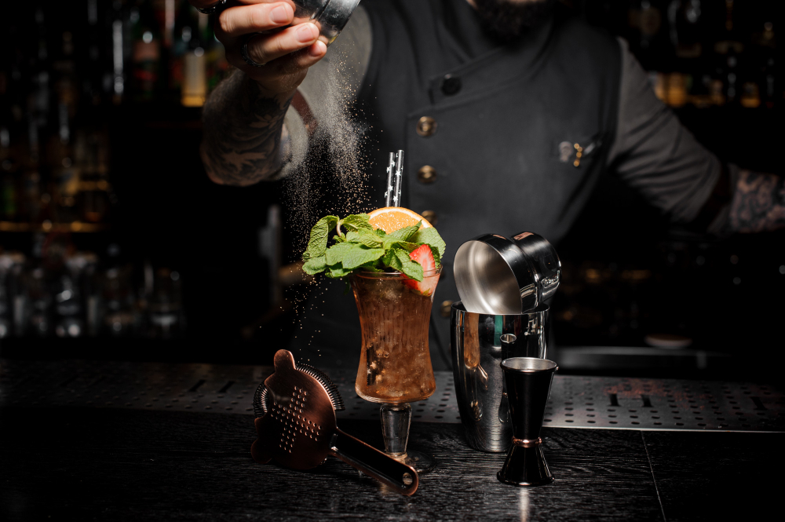

 Antes de comenzar deberemos de remontarnos unos cuantos años atrás para conocer la historia de la coctelería y sus origenes... a coctelería nació como remedio exclusivamente terapéutico y tuvo su origen en los monjes. El honor de haber creado lo que hoy en día conocemos como “coctelería” se le debe a la orden Benedictina del siglo XVI. Estos elaboraban aguardientes de hierbas con fines medicinales. Este fue establecido como el inicio de la historia de la coctelería. En 1575, nace la primera destilería de la historia fundada en Irlanda. Se trata de la destilería más antigua en el mundo del Whisky. Más adelante, con la llegada de los europeos a América se exportan materias primas como la uva, el café o la caña de azúcar y por supuesto el sistema de destilación. Creando así, destilados como el Tequila, el Pisco, la Cachaça, el Rhum… y sus correspondientes destilerías, como La Rojeña de Don José Cuervo o la de Mount Gay. Es a partir de estas fechas cuando aparece la prehistoria de la coctelería actual. Los marineros comienzan a agregar zumo de limón al ron y a la ginebra, para evitar enfermedades debidas a la carencia de vitamina C. También le añaden hierba buena y azúcar o diferentes frutas, naciendo así bebidas muy parecidas a los Mojitos, Gimlets o Grogs actuales. También influyen en la historia de la coctelería los antiguos farmacéuticos que jugaban con alcoholes y la alquimia para preparar remedios para las dolencias. A estos cócteles farmacéuticos se les llamaba Eau de Vie (agua de vida), por su capacidad de hacer sonreír y levantar el ánimo a los pacientes. Estos cócteles conseguían efectos restauradores del humor y de la salud logrando en algunos casos comportamientos eufóricos que transformaban a la persona haciéndola más sociable. En 1792, se lanza un elixir compuesto principalmente de ajenjo, anís e hinojo, entre otras infusiones, a la que hoy llamamos Absenta. Pero el término “coctelería” aparece realmente por primera vez el 13 de Mayo de 1806, en el periódico neoyorkino The Balance and Columbian Repository. En el artículo se contestaba la pregunta de un lector que preguntaba el significado de coctelería, a la cual se respondía “Cocktail es un licor estimulante integrado por alcoholes de varios tipos, azúcar, agua y bitters. Se supone que es una poción excelente que el corazón prefiere frente a la cerveza de malta, a la vez que achispa la cabeza. De buen uso para los políticos, porque una persona que bebe estas combinaciones está preparada para cualquier cosa.” Durante esta época grandes personalidades de Estados Unidos e Inglaterra compartían extravagantes mezclas y combinaciones de aguardientes como ginebra o whisky y licores de frutas o hierbas. Estos actos entre la alta burguesía contribuyen a crear el movimiento de la coctelería. Junto con la revolución industrial y la emigración de europea a los EE.UU la industria del alcohol despega, al mismo tiempo que la figura del bartender. El alcohol, aunque se utilizaba con fines recreativos, no dejaba de ser usado como tónico medicinal. Ya en el siglo XXI gracias a la globalización y la gastronomía molecular nacen términos como Mixología. Actualmente la coctelería pasa por su mejor época y podemos encontrar grandes bares y profesionales por todo el mundo. Si quieres seguir aprendiendo sobre coctelería visita nuestra página web donde tenemos muchas más noticias sobre ello.